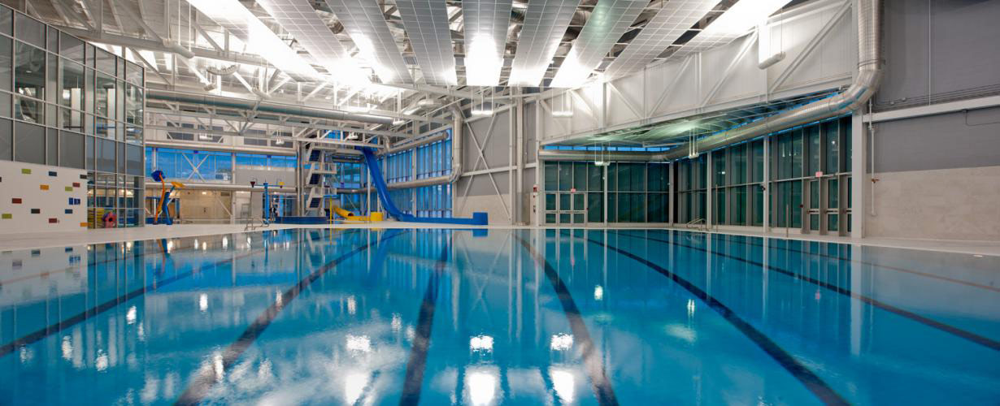

About MCP
Maeverly Community Pool resides within the Maeverly South Hamlet of Windershire Ontario. Located in the heart of the community, MCP offers a wide variety of activities from leisurely swimming to classes and certifications as well as after school programs and summer camps. A ful list of our programs can be found under Schedule
